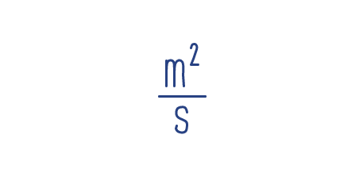

El MOVIMIENTO es el cambio de posición de un cuerpo con respecto a un observador durante un cierto tiempo.
El MOVIMIENTO VARIADO es aquel movimiento donde el móvil sufre cambios de velocidad en intervalos de tiempos iguales.
El MRUV es aquel movimiento en el cual la velocidad cambia en su valor, ya sea aumentando o disminuyendo progresivamente, por lo que los espacios recorridos en tiempos iguales serán diferentes, por tanto la partícula se mueve con aceleración constante.
El ESPACIO es la longitud del desplazamiento o del cambio de posición que realiza un móvil.
El espacio se mide en: metros (m), Centímetro (cm), pie (ft), otras: Kilómetros (Km), millas, yardas, etc.
El TIEMPO es la duración de alguna acción, o de algún evento.
El tiempo se mide en: segundos (s), minutos (min), hora (h), día, semana, mes,trimestre,año,etc.
LaVELOCIDADes el espacio recorrido por un móvil en la unidad de tiempo.
Las unidades de la velocidad pueden ser:
La ACELERACIÓN es la relación que existe entre la variación de la velocidad y la unidad de tiempo.
Las unidades de la aceleración pueden ser:
En el movimiento rectilineo uniformemente variado las distancias recorrida son diferentes por intervalo de tiempo igual.Esto hace que la velocidad varíe en su módulo (rapidez) y la razón de está variación de velocidad por unidad de tiempo se llama aceleración. Es uniformemente porque las distancias aumentan o disminuyen proporcionalmente por cada intervalo consecutivo, de manera que la variación de la velocidad es igual en el mismo intervalo de tiempo. La aceleración es una razón constante osea que siempre es el mismo valor.
Recuerda que siempre que una unidad es inicial trae el pequeño círculo al lado (Vo) y cuando es final no trae el círculo
A continuación podrás ver las formulas del Movimiento Rectilíneo Uniformemente Variado con su respectiva observación